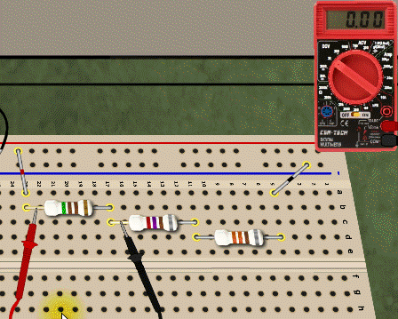
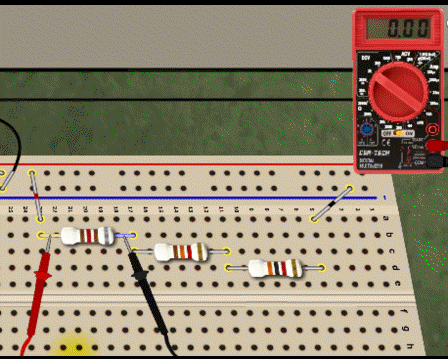
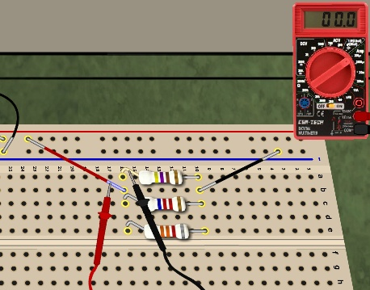
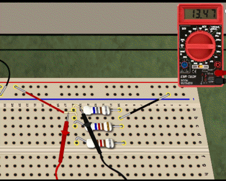

Troubleshooting Breadboard Circuits
Troubleshooting techniques are an application of basic logic. Some people are very good at logic puzzles, and can solve them very efficiently. Most people improve with practice.
The SPARKS troubleshooting challenges are fairly simple. They require you to understand how series and parallel circuits work. Most can be done by measuring the voltage dropped across one or more components, and perhaps lifting a lead or two to measure current.
Series CircuitsThe series resistance circuit will be simplest circuit to solve. You are looking for a single defective resistor: either shorted (zero resistance) or open (infinite resistance). You will apply these important facts about series circuits:
Parallel CircuitsIn the SPARKS parallel circuits, a zero-ohm resistor would short the battery, so we've limited the defects to open resistors and out-of-tolerance resistors: either far too large, or far too small. Again, you are looking for a single defective resistor. In parallel circuits, the most efficient test is a current measurement, which requires lifting a lead on each resistor to insert the DMM into the circuit, as shown in Figure 3.
Series-Parallel CircuitsIn circuits with both series and parallel connections, you must apply both of the above techniques. Use the series-circuit principles to test the series resistors, and the parallel-circuit principles to test the parallel resistors. NOTE: You must be especially careful of the current path when measuring with lifted leads to avoid blowing the DMM fuse. In any case, practice with the SPARKS circuits will rapidly improve your troubleshooting skills! |
|
 |
|
 |
|
 |
|
 Figure 4. Finding too small current in R3 indicates R3 has too large of a resistance value. (Mouse-over to replay animation.) |